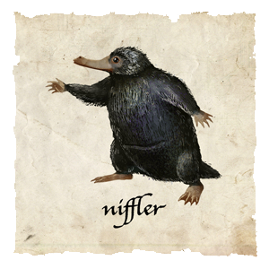
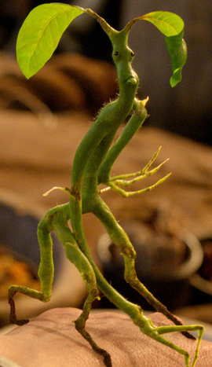

Sarah the Niffler 
This Niffler is a magical beast with a long snout and a coat of black, fluffy fur. She is attracted to shiny things and are generally harmless and easy going. However, you might want to hide your shiny, freshly glazed donut!
Aaron the Bowtruckle
The Bowtruckle, which eats insects, is a peaceable and intensely shy creature but if the tree in which it lives is threatened, it has been known to leap down upon the woodcutter or tree-surgeon attempting to harm its home and gouge at their eyes with its long, sharp fingers. An offering of woodlice will placate the Bowtruckle long enough to let a witch or wizard remove wand-wood from its tree.
Denise the Occamy

The Occamy is found in the Far East and India. A plumed, two-legged winged creature with a serpentine body,the Occamy may reach a length of fifteen feet. It feeds mainly on rats and birds, though has been known to carry off monkeys. The Occamy is aggressive to all who approach it, particularly in defence of its eggs whose shells are made of the purest, softest silver.
—Newt Scamander,
Fantastic Beasts and Where to Find Them